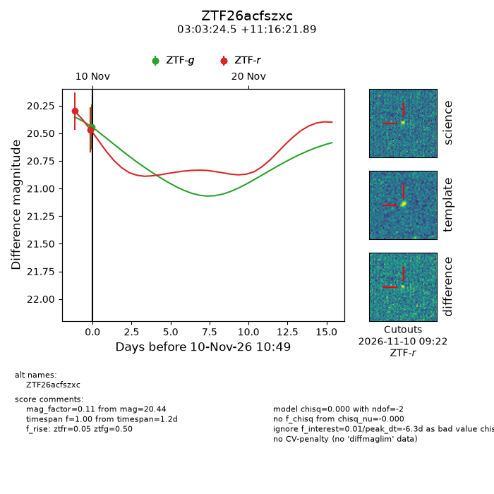
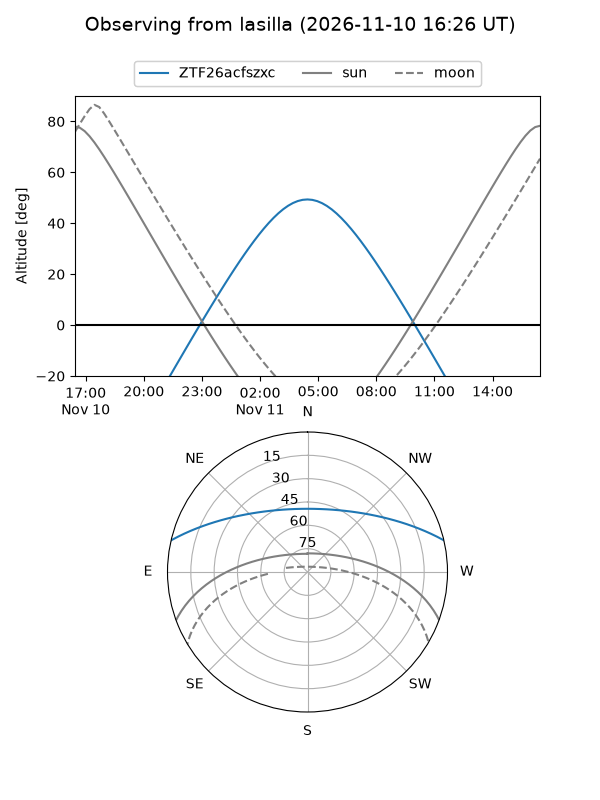
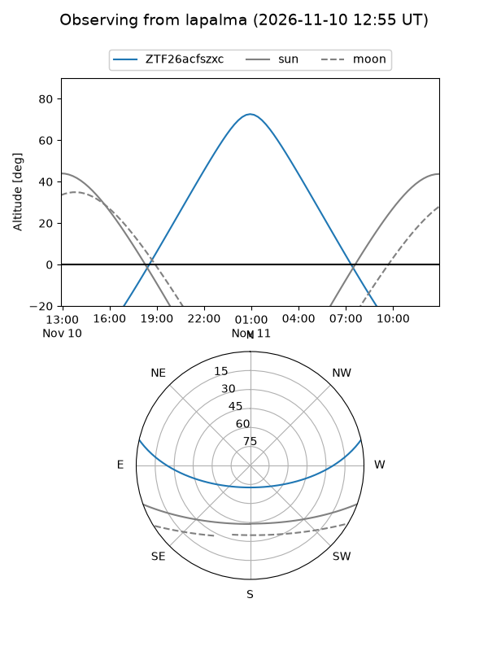
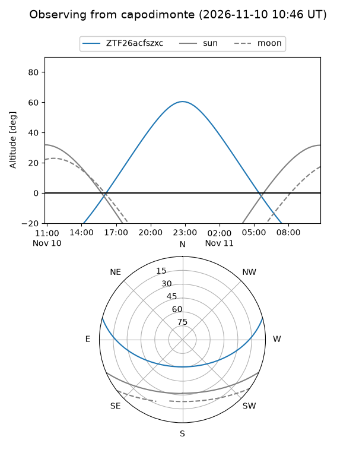
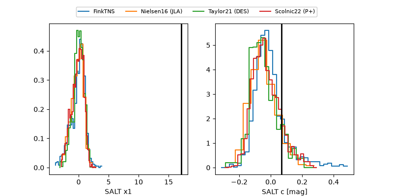

ZTF26acfszxc
Target ZTF26acfszxc at 2026-11-10 10:52
Aliases and brokers:
FINK-ZTF: ztf.fink-portal.org/ZTF26acfszxc
Lasair-ZTF: lasair-ztf.lsst.ac.uk/objects/ZTF26acfszxc
ALeRCE-ZTF: alerce.online/object/ZTF26acfszxc
Direct TNS query: direct search
alt names
ZTF26acfszxc (ztf,fink_ztf)
Coordinates:
equatorial (ra, dec) = 45.8522,+11.27275
equatorial (HMS+DMS) = 03:03:24.53,+11:16:21.89
galactic (l, b) = (167.1374,-40.01077)
Flags:
peak dt: -6.3
Photometry:
last ztfg=20.44, ztfr=20.47
1 ztfg, 2 ztfr detections
Lightcurve

Visibility



Additional plots
